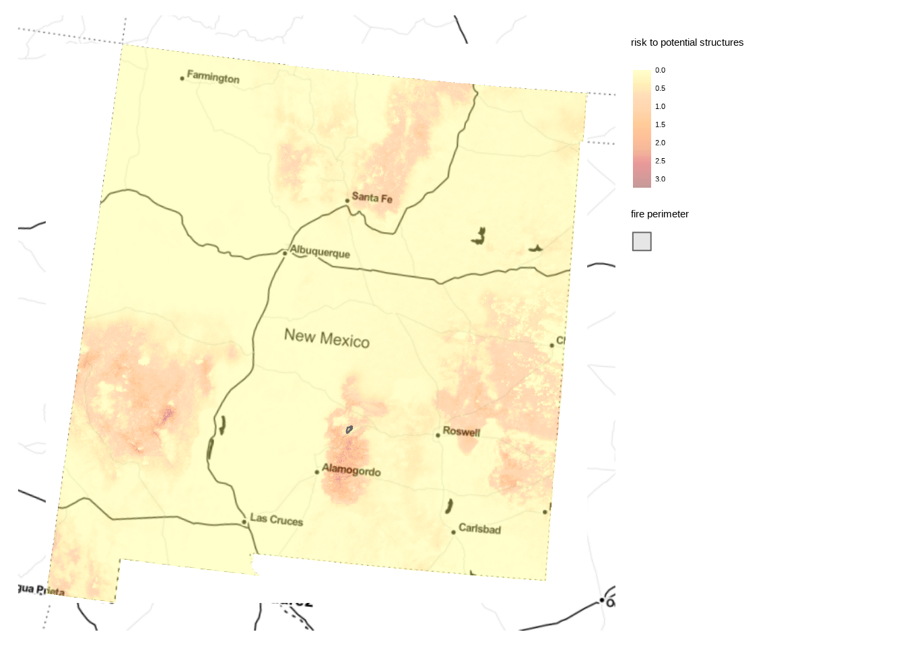
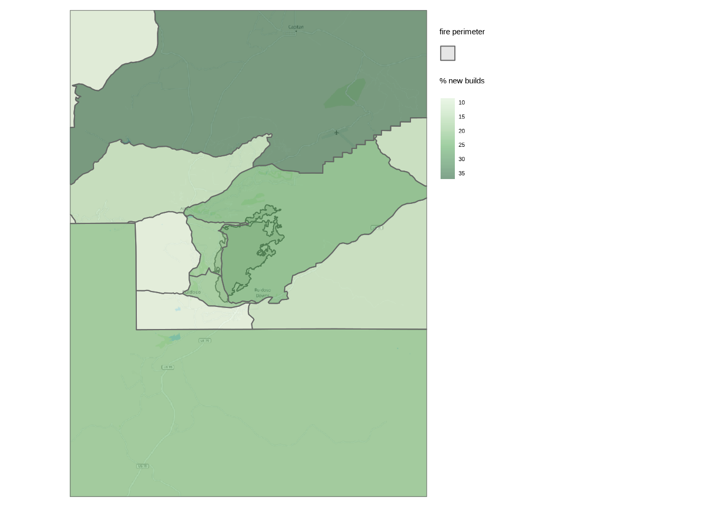

Wildfire Event Analysis
2022-04-22
Fire Perimeter
|
| | 0%
|
|====== | 8%
|
|============ | 17%
|
|================== | 25%
|
|======================= | 33%
|
|============================= | 42%
|
|=================================== | 50%
|
|========================================= | 58%
|
|=============================================== | 67%
|
|==================================================== | 75%
|
|========================================================== | 83%
|
|================================================================ | 92%
|
|======================================================================| 100%
The McBride Fire began on April 12 2022 in Lincoln County, New Mexico around the area of Gavilan Canyon within the Village of Ruidoso. The fire currently has moderate fire behavior with an approximate size of 6195 acres and 0 percent containment. It is classified as a Type 1 Incident with about 299 people assisting the fight. Total cost to date, including property loss and firefighting resources, is estimated at $666,271. As of now the cause is of undetermined origin.
Wildland fire agencies use the Incident Command System (ICS) to categorize the severity of fires. This system allows flexible fire response by scaling resources like engines, hand crews, and aircraft up or down as the complexity of the fire changes. Figure 1 offers further detail on the ICS. The vast majority of fires are among ICS types 1 through 3 and therefore with an estimated cost below $1 million.
Figure 1: The Incident Command System categorizes severity of fires.
Risk Rating
The ClimateCheck Wildfire Risk Rating is based on data representing extreme fire weather and probabilistic fire behavior characteristics. We calculate the Fire Weather Index (FWI), a daily wildfire danger rating system metric that accounts for the effects of moisture content and wind on the amount of fuel available for combustion and how quickly a fire might spread. FWI is a measure of potential fire intensity—or energy available to be released–and a good indicator of overall fire danger. Input data to the FWI include temperature, precipitation, relative humidity and wind speed from 20 Coupled Model Intercomparison Project Global Climate Models (GCMs) downscaled to 6km spatial resolution.
The two parameters we estimate from FWI distributions per GCM are the magnitude and frequency of extreme fire weather days, i.e., how often extremely dangerous fire weather occurs and how much more extreme it will be. This method looks at changes in the upper tail end of daily FWI values. Frequencies can be found for each target year (e.g., 2050) by counting daily exceedances of the historical extreme magnitude. Extreme is defined using a threshold blended from local and national historic baselines of extreme FWI values exceeding the 99th percentile. Figure 2 shows how the magnitude and frequency of extreme FWI days changes over the next few decades for the area within the McBride Wildfire perimeter.
We model climate risk for wildfires with FWI since the majority of severe (high consequence) wildfires occur on days with high FWI values (???; ???). FWI is also more reliable than other approaches to modeling climate risk for wildfires. While increases in the FWI due to anthropogenic climate change have been observed over the past several decades (???), climate risk models that explicitly parameterize land cover and land use change over projected time are susceptible to high degrees of uncertainty (???). FWI is therefore the preferred metric for modeling wildfire severity and how climate change will impact wildfire risk.
Figure 2: FWI trends over time in the wildfire perimeter.

Since extreme FWI estimates are at too coarse a spatial resolution for property-level risk assessment, we utilize recently released, 30m resolution 2020 US Forest Service (USFS) wildfire risk data products known as Risk to Potential Structures (RPS), which is the likely damage if a house were present and a fire occurred. Figure 3 shows RPS around the McBride Wildfire perimeter. This wildfire severity product represents:
- Burn Probability: the chance of a wildfire starting (frequency)
- Flame Length Exceedance Probability: likelihood that flame length exceeds a certain height (intensity)
Figure 3: USFS Risk to Potential Structures around the McBride Wildfire
We combine the change in extreme FWI exceedances with these static USFS data to represent how wildfire frequency, intensity, and severity will shift over future time. Risk is rated using the weighted sum of CDF transformations: .25 for extreme FWI frequency, .25 for extreme FWI magnitude, .25 for burn probability, and .25 for flame length exceedance probability. The combined product is at a sufficiently high 30m2 spatial resolution to assess risk based on the environmental context for a specific property. Lastly, we adjust risk in managed and non-burnable lands with the National Land Cover Database according to land cover (e.g., barren land), urbanicity, and agricultural activity. Figure 4 shows the ClimateCheck Wildfire Risk Rating around the McBride Wildfire perimeter. In summary, this rating method excels at estimating:
- Property-level differentiation in wildfire risk
- Frequency, intensity, and severity of wildfire events
- Wildfire risk over the 21st century
Figure 4: ClimateCheck Wildfire Risk Rating around the McBride Wildfire
Wildfire risk is -1.19 percent higher within the McBride Wildfire perimeter (average risk rating = 78.78) than for the neighboring area (average risk rating = 79.72). 1 provides comparison statistics for the McBride Wildfire perimeter and the nearby surrounding area.
| statistic | perimeter | surrounding |
|---|---|---|
| score_2050 | 78.78 | 79.72 |
| baseline_avg_magnitude | 59.23 | 58.67 |
| baseline_avg_counts | 4.86 | 4.46 |
| future_avg_2050_magnitude | 65.01 | 64.52 |
| future_avg_2050_counts | 9.00 | 8.92 |
| RPS | 91.37 | 92.61 |
Exposed Structures
Wildfires typically occur in wildland vegetation areas with very few people and structures. The Wildland-Urban Interface (WUI), areas where settlement intersperse with undeveloped wildland vegetation, has been increasing in geographic extent, number of structures, and population over the past several decades (???). This trend means more human ignitions and a greater difficulty in protecting life and property. Figure 5 displays buildings around the McBride Wildfire perimeter. There are approximately 196 buildings inside the fire perimeter whereas about 5098 buildings are within one mile of the perimeter.
Figure 5: Building locations in the McBride Wildfire vicinity.
Many of these buildings were constructed in recent years. The number of new builds constructed since 2000 in nearby Census Tracts was estimated at 3621, which is about 18.6 of total structures. Figure 6 shows these construction trends over time while Figure 6 presents the proportion of new builds, both for Census Tracts around the the McBride Wildfire.
Figure 6: New builds in Census Tracts surrounding the McBride Wildfire.
